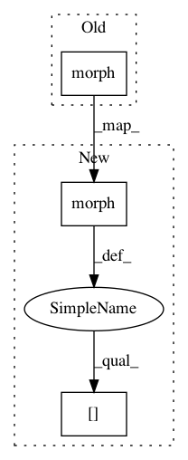

6e632417bd19ea1db263d1790779fb625457df07,paderbox/speech_enhancement/beamformer_wrapper.py,,get_multi_source_bf_vector_from_masks,#,327
Before Change
pb.speech_enhancement.get_multi_source_bf_vector(
method,
target_psd_matrix=morph("fkdD->kfdD", target_psd),
interference_psd_matrix=morph("fkdD->kfdD", interference_psd),
noise_psd_matrix=target_psd[:, -1, :, :],
source_index=k,
epsilon=lcmv_epsilon,
After Change
pb.speech_enhancement.get_multi_source_bf_vector(
method,
target_psd_matrix=morph("fkdD->kfdD", target_psd)[:K - 1],
interference_psd_matrix=morph("fkdD->kfdD", interference_psd)[:K - 1],
noise_psd_matrix=target_psd[:, -1, :, :],
source_index=k,
epsilon=lcmv_epsilon,
In pattern: SUPERPATTERN
Frequency: 3
Non-data size: 3
Instances
Project Name: fgnt/pb_bss
Commit Name: 6e632417bd19ea1db263d1790779fb625457df07
Time: 2019-08-07
Author: mail@lukas-drude.de
File Name: paderbox/speech_enhancement/beamformer_wrapper.py
Class Name:
Method Name: get_multi_source_bf_vector_from_masks
Project Name: fgnt/pb_bss
Commit Name: a22133366f0ccd22c8c2ac2d7b843a3e426c393d
Time: 2019-07-10
Author: heitkaemper@nt.upb.de
File Name: paderbox/speech_enhancement/beamformer.py
Class Name:
Method Name: block_online_beamforming